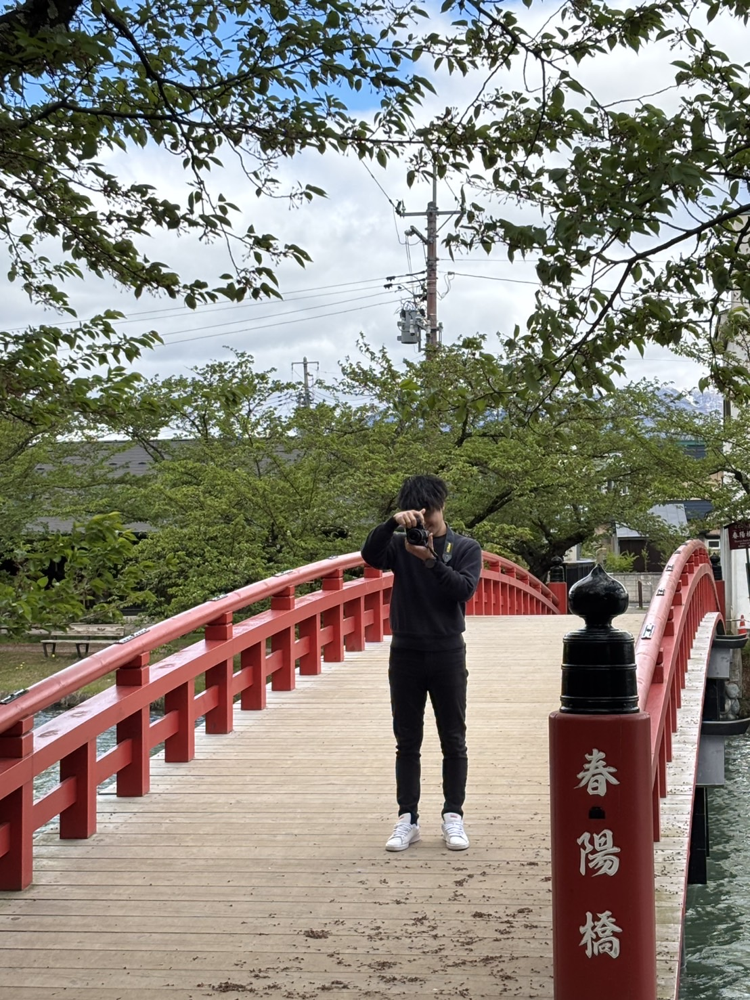
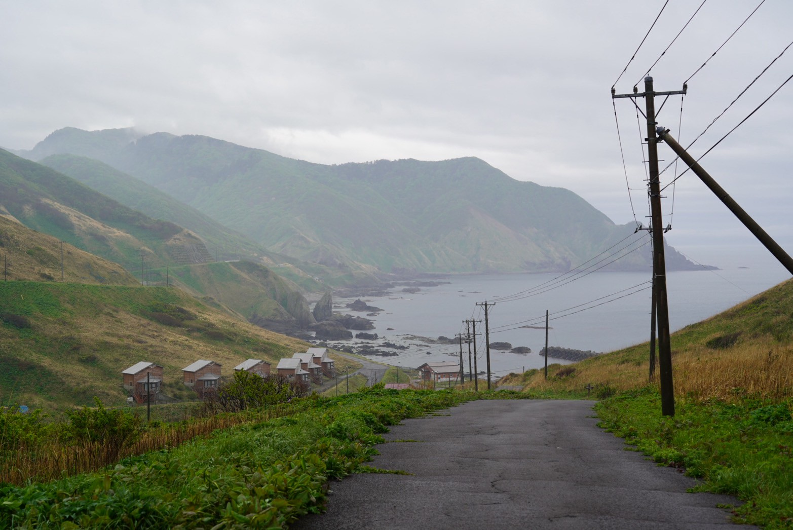

Gallery




Takumi Yabu
藪 巧光
1997年生まれ、愛知県在住。
現在、売上 4兆円規模 の自動車部品メーカーで PLM（製品ライフサイクル管理）システムの開発 を担当しています。要件定義・設計からデータベース連携、システム導入までを一貫して手がけ、現場の業務効率化に貢献してきました。
社内では Webサイトのデザイン構築・コーディング にも携わり、エンジニア視点とUI/UXの知見を融合させて、ユーザーが直感的に操作できる分かりやすいサイト を提供しています。現場課題をシステムとWebの両面から解決できるエンジニアとして、日々スキルを磨き続けています。
現在、ユーザーが見やすいWebサイトを開発中です。
本業では、さらなる業務改善・システムの内製化推進を目指し、副業ではWebアプリ開発や自動化ツール制作を通じて社会に貢献したいと考えています。
このポートフォリオでは、私のスキルや実績、取り組みをご紹介し、信頼されるエンジニア像をお伝えしたいと考えています。
将来的にはフルスタックエンジニアを目指して頑張りたいです。
メールアドレス：yabu1997t@gmail.com